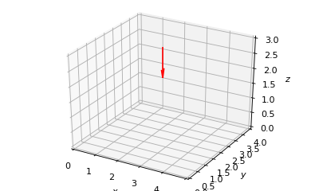

Point Source (Vector)¶
-
class
owcsimpy.geoobjects.models.pointsource_py.PointSource_py(polar, azimuth, loc, m=1)[source]¶ A point source models.
Mainly used for modeling an LED.
HumanCube_py is inherited from
Vector_py- Parameters
- polar: float
Polar angle of the normal vector in rads
- azimuth: float
Azimuth angle in rads
- loc: ndarray(3,)
Location of the point source.
See also
Examples
>>> import matplotlib.pyplot as plt >>> import numpy as np >>> >>> from owcsimpy.geoobjects.models.pointsource_py import PointSource_py as PointSource >>> from owcsimpy.geoutils.draw import draw >>> >>> led = PointSource(np.pi,0,np.array([2.5,2,3])) >>> >>> draw(vectors=led,xlim=[0,5],ylim=[0,4],zlim=[0,3]) >>> >>> plt.show()
- Attributes
- loc: ndarray(3,)
Location of the point source